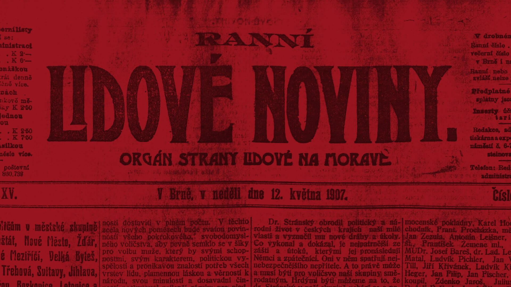
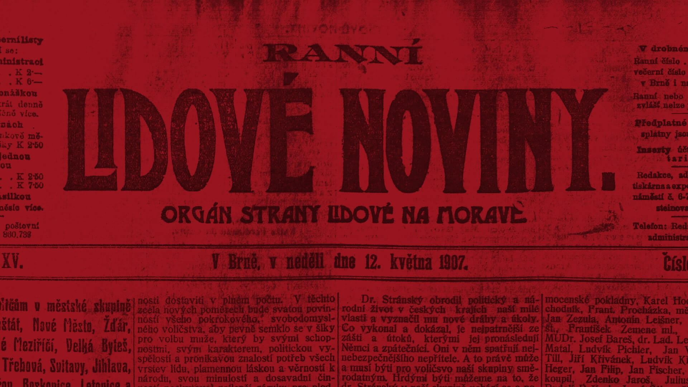

Ano
Ne
Choice 3
Choice 4
Choice 5
V českých zemích se voleb zúčastnilo 84 % voličů. Kombinace většinového systému a nerovného rozdělení volebních obvodů ale výsledky voleb zkreslila. Sociální demokracie sice získala 37,4 % hlasů, ale jen 22,3 % mandátů. Vedle toho agrárníci měli 24,3 % hlasů, ale zisk 22,5 % mandátů.
Ve vídeňském parlamentu získali největší zastoupení agrárníci s 28 mandáty, mladočeši se staročechy s 26 mandáty, sociální demokracie s 24 mandáty, klerikální strany se 17 mandáty a státoprávní blok s 9 mandáty. Hůře skončili pokrokáři a nezávislí se čtyřmi mandáty.
Jako do značné míry samostatný kandidát uspěl i T. G. Masaryk, neměl však v parlamentě stranické spojence.
Konzervativní a reformní strany se úspěšně pokusily izolovat reálného vítěze voleb, sociální demokracii. Vliv tehdejších reprezentantů národa, mladočechů a staročechů, končil. Do politiky začala vstupovat nová témata, z toho nejvýrazněji sociální. Svou cestu si hledala radikální levicová politika, spolu s ní rostli i pravicoví agrárníci.
Volby nedokázaly zabránit rozpadu rakouského parlamentarismu.